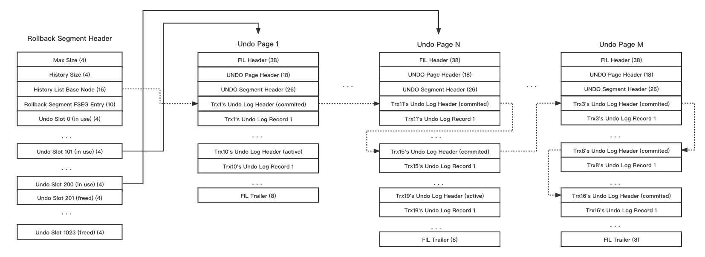

前言
已经有不少文章对 InnoDB 的 undo 系统进行了全面介绍，比如：
本文主要关注一些 Undo 系统设计/代码实现映射，以及部分笔者关心的代码细节，建议结合阅读上述文章。
Undo的物理组织
首先要明确的一点是 InnoDB 的 undo log 实际上是以表数据格式记录的（所以叫 undo tablespace），并且除了 temporary table 的 undo，正常用户表 undo 都通过 redo 来维护持久性。
由于通过表空间存储 undo log，所以 undo 文件的基础组织形式是类似 InnoDB 的 ibd 文件，内部有如 File Segment 等概念、有各种文件维护结构的 list、有 page 上文件维护结构相关的 meta，等等。并且分配 undo page 时候也是通过 fsp_reserve_free_extents 这一接口去申请空闲数据页。
每个 Undo Tablespace 有最多128个可用的 Rollback Segment，Undo Tablespace 第三个页有128个 Rollback Segment 的目录（Rollback Segment Header’s Arrary），其中每个元素指向各个 Rollback Segment Header 所在的 page number。初始化时候会处理所有 Rollback Segment，如果未使用则为 FIL_NULL，通过 innodb_rollback_segments 参数控制实际使用数目。
一个 Rollback Segment Header 包含1024个 slot（四字节），每个 slot 指向 Undo Segment 的 first page number，也就是这个 Undo Segment 的 Undo Header Page。每一时刻，每个使用的 Undo Segment 都被一个事务独占，而每个写事务都会持有至少一个Undo Segment，因此被使用的 Undo Header Page 中只有一个未提交事务的 Undo Segment Header，当活跃事务产生的 undo 超过 Undo Header Page 容量后会被分配新的 Undo Normal Page。
写事务在修改数据前，会先通过 Undo Log 记录修改前的（主键）数据，并且 undo 分为 insert (UNDO_INSERT) 和 update (UNDO_UPD_EXIST、UNDO_DEL_MARK、UNDO_UPD_DEL) 两类。记录 undo log 前会先写入 Undo Log Header 用于标记和定位，然后逐条写入 Undo Record。
|
|
可以通过参考资料中的这个图来查看上述物理结构的逻辑关系，更具体的细节结构定义可以查看trx0undo.h文件。

生成Undo的代码逻辑
分配回滚段
对于只读事务，当事务涉及到对临时表的读写时，会为其分配一个回滚段对其产生的 undo log record 进行记录：
|
|
对于读写事务，当事务进入读写模式时，会为其分配 trx_id 以及回滚段：
|
|
分配行为只是一个基于轮询的内存操作，顺序为[(space0, rseg0), (space1, rseg0), … (spaceN, rseg0), (space1, rseg0)…]，最终会为 trx 返回一个有效的 trx_rseg_t（回滚段的内存结构）。一个事务最多会有2个 rollback segment（temp/durable区分）和 4个 undo segment（insert/update再次区分）。
分配Undo
|
|
函数trx_undo_report_row_operation是写入undo的代码接口，首先会如果当前事务没有分配过所需类型的 undo segment，则会通过trx_undo_assign_undo分配 undo segment/page（trx_undo_t结构），首先尝试从当前 trx_rseg_t 的 insert/update cache中取（接口为trx_undo_reuse_cached，cache 内是如果对应undo事务结束时候所使用的 undo page 所用空间小于3/4则被加入的），cache 中没有则在空间总重新分配一个undo segment（接口为trx_undo_create）。分配好 undo page 从空闲位置开始对应写入 Undo Record，如果 undo page 的剩余空间不满足要求则通过trx_undo_add_page加一个空白的 normal page 记录 Undo Record。
整个过程中，除了物理 undo page 更新及通过 redo 持久化，还维护了内存中的当前事务所使用的 trx_undo_t 结构体（trx->rsegs.m_redo/ m_noredo.insert_undo/ update_undo），包括 header page、log header、top undo page/offset等信息。
写入Undo Reocrd
|
|
|
|
Undo Record的内容格式如上所示，这里再额外说明下：
- 对于 insert undo，记录的是插入的 entry 的 key 部分，用于回滚时定位寻找并删除，insert 操作不存在可见性判读因此没有记录Trx_id；
- 对于 update undo，传入的参数时 index_record（rec_t）和 update（upd_t）这个内存结构，实际记录的是 record key 和要被修改的 field，前者用于定位，后者用于还原到原始版本。
- 对主键数据生成 undo 后就产生了 roll_ptr 并对新 record 进行更新，就是通过 roll_ptr 将 record 的所有版本链接起来。
事务提交时的Undo处理
在 trx_commit 的时候，如果事务发生修改并产生了 undo：
- 设置 undo 后续处理状态： undo 使用单个 page 且使用量小于 3/4 的会被设置为 TRX_UNDO_CACHED 状态；其余的 insert undo 状态被设置为 TRX_UNDO_TO_FREE，update undo 状态被设置为 TRX_UNDO_TO_PURGE；
- 给事务分配提交顺序 trx_no；
- 对 update undo 回滚段的内存结构，加入 purge_sys->purge_queue 这一队列（其内按事务提交时的 trx->no 排列）以给 purge 系统定位回收；
- 将 trx->no 写入 rseg/undo header，并 undo header 将加入到 rseg header 中 history list 的开始；
- 对 update undo，内存结构 trx_undo_t 按状态加入 rseg->update_undo_cached 或 trx_undo_mem_free；
- 对 insert undo，内存结构 trx_undo_t 按状态加入 rseg->insert_undo_list 或 trx_undo_mem_free，并且在 rollback segment 中清理不在 history 的 undo log segment（trx_undo_seg_free）；
应用Undo的代码逻辑
应用 undo 主要是在 mvcc 和 rollback 过程中，而 rollback 又可以分为用户 rollback 和奔溃恢复 rollback。本文主要讨论 rollback 过程，对于 mvcc 操作会开另外的文章专门讨论。
奔溃恢复时Rollback
对于奔溃恢复过程中的 Rollback，首先需要恢复 undo 相关信息：
- 通过 redo，在启动的recv_recovery_from_checkpoint_start->recv_recovery_begin阶段恢复undo数据；
- 通过恢复的 undo 数据，在启动的trx_sys_init_at_db_start阶段恢复所有回滚段的内存结构，trx_sys 的活跃事物。活跃事物通过
trx_resurrect分别扫描rseg->insert_undo_list/update_undo_list，生成后台trx对象并初始化相关参数并加入trx_sys->rw_trx_set，再按状态加入 trx_sys->rw_trx_ids（活跃）和 trx_sys->rw_trx_list（所有）。 - 在 dict_recover DICT_RECOVERY_RESTART_SERVER 阶段，srv_dict_recover_on_restart 中会加上表锁并 rollback DD 相关事务；
- 在 post_recover 阶段末尾，srv_start_threads_after_ddl_recovery 开启后台回滚线程，扫描 trx_sys->rw_trx_list，对恢复的事务，回滚TRX_STATE_ACTIVE事务（trx_rollback_active）、清理COMMITTED_IN_MEMORY事务（trx_free_resurrected）。
- 后台回滚线程trx_recovery_rollback_thread最终通过trx_rollback_active反向应用 trx undo log 后提交（rollback本身也是通过trx_commit表示事务完成）来回滚活跃事务。
这里可以看到在 recovery 的前向 redo 是不会使用到 undo 的，已经持久化的 redo 对应需要的 undo 肯定已经被持久化，前向 redo 本身也不在产生额外 undo。此外也再次可见，undo 内容是以数据模式记录的。
应用Undo
实际应用 undo 是在 row_undo_step 中:
|
|
- 首先解析需要被应用的 undo，这里涉及开 innodb 表，且在后台回滚情况下这里再需要加上 DD 的 MDL 锁；
- 在
row_undo_search_clust_to_pcur通过 undo 里面的 key 信息在主键上索引 row reference，并根据 roll_ptr 判断找到的主键是否是需要undo的主键。如果找到则构建并存储找到的 index record 的内存结构 dtuple_t，如果是 update，还需构建出来 update 之前的版本（即应用了undo后还原的原先版本）； - 对于 insert 的 undo 较为简单，从二级索引到主键删除目标 record；
- 对于 update 的 undo，在二级索引上，
- UPD_EXIST（原操作为 update record）的 undo 会根据可见性 标记删除 或 物理删除 现有二级索引记录，再更新或插入undone record；
- DEL_MARK（原操作为 delete mark record）的 undo 会 去除删除标记 现有二级索引记录，如果不存在则 重新插入；
- UPD_DEL（原操作为 undelete mark record）的 undo 会根据可见性 标记删除 或 物理删除 现有二级索引记录。
- 对于 update 的 undo，在主键上则走 btr_cur 的 update 逻辑进行更新，对于 UPD_DEL 还会主动尝试清理标记删除的 record。
值得一体的是在崩溃恢复的 undo 事务，事务锁在初始状态下都是隐式锁，是通过其他冲突事务在加锁时通过lock_rec_convert_impl_to_expl 或 undo 应用阶段通过 row_convert_impl_to_expl_if_needed加上事务锁。此过程中加的都是 record lock，这是由于后台 undo 不被用户所见，其本身不具备可见性要求因此不会加上 next key lock。
回收Undo的代码逻辑
在 innobase_post_recover 中 ddl恢复完成后，保证 InnoDB metadata 和 file system 一致后的阶段，系统会启动 srv_purge_coordinator_thread 和 srv_worker_thread 来purge undo，相关内容会在 purge 系统中介绍。
- 版权声明：如需转载或引用，请附加本文链接并注明来源。